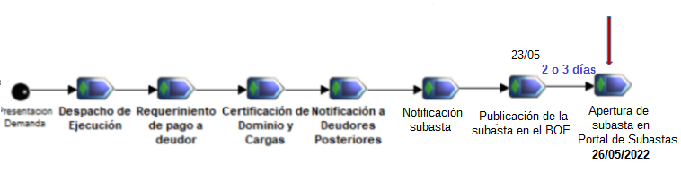

El acreedor hipotecario puede hacer efectivo su crédito a través de cuatro vías procesales una de las cuales es la ejecución (artículos 517 y siguientes de la Ley de Enjuiciamiento Civil (LEC). (Se abre en una ventana nueva)
 El gráfico muestra las diferentes etapas y el punto en que se encuentra el proceso: solo falta la publicación de la subasta, existiendo ya un edicto que anuncia su venta en pública subasta y habiendo pagado el ejecutante las tasas correspondientes.
Conviene remarcar que, estando las llaves en poder de los ejecutantes y la vivienda protegida con una alarma anti intrusos Prosegur, una vez adjudicada la vivienda y ejecutados todos los trámites posteriores (Guía de Subastas Judiciales) se hará entrega de las llaves al comprador.
En el caso de los inmuebles, solo se podrá visitar el interior, si existe dicha posibilidad por que el demandado propietario lo permita, cosa que se está intentando en este caso y ya se ha conseguido la entrega de las llaves al ejecutante.
Una vez iniciado la activación de la subasta los ejecutantes, tras la autorización judicial, aparecerá en EL BOE el anuncio de subasta y, uno o dos días más tarde, aparecerá en el PORTAL DE SUBASTAS del BOE donde se publicará el edicto de subasta así como cuantos datos y circunstancias sean relevantes para la misma (art. 646.2 de la LEC).
Aunque los interesados en participar en la subasta pueden tener acceso a la certificación de dominio y cargas (Se abrirá en una nueva ventana), esta es de hace cuatro años, por lo que es conveniente solicitar una nueva al Registro de la Propiedad o una nota simple actualizada.
Esta información, sirve para conocer si el que adquiere un bien en la subasta tiene que asumir o no el pago de embargos, hipotecas o cualquier otra carga. En el caso de que existan varias cargas, podemos conocer cuál es la que da lugar a la subasta . Por el solo hecho de participar en la subasta, el postor tiene que admitir las cargas o gravámenes que aparezcan en la certificación del Registro de la Propiedad y que sean anteriores al crédito del actor que da lugar a la subasta y sigan subsistentes. En el caso de que existan cargas posteriores, no tendrá que pagarlas.
En nuestro caso, en la Certificación de Dominio y Cargas se manifiesta que existen dos:
El Artículo 674 de la LEC. Cancelación de cargas dice:
"A instancia del adquirente, se expedirá, en su caso, mandamiento de cancelación de la anotación o inscripción del gravamen que haya originado el remate o la adjudicación.
Asimismo, el Letrado de la Administración de Justicia mandará la cancelación de todas las inscripciones y anotaciones posteriores , incluso las que se hubieran verificado después de expedida la certificación prevenida en el artículo 656, haciéndose constar en el mismo mandamiento que el valor de lo vendido o adjudicado fue igual o inferior al importe total del crédito del actor y, en el caso de haberlo superado, que se retuvo el remanente a disposición de los interesados".
Los siguientes enlaces explican esto detalladamente:
En caso de dudas, comuníquese a